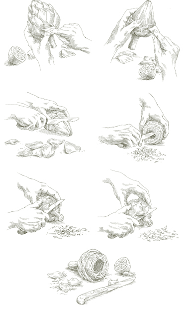
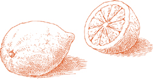
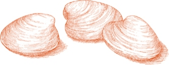

На 28 канапе
½ фунта свежей рикотты
1 столовая ложка масла, размягченного до комнатной температуры
8 филе анчоусов (предпочтительно приготовленные дома)
1 столовая ложка оливкового масла первого холодного отжима
Черный перец, свежемолотый
7 ломтиков качественного, плотного белого хлеба для тостов
1. Разогрейте духовку до 200°C.
2. Если рикотта очень влажная, заверните ее в марлю и повесьте, чтобы она стекала над раковиной или миской примерно на 30 минут. Положите рикотту и все остальные ингредиенты, кроме хлеба, в кухонный комбайн и измельчите до кремообразной консистенции.
3. Выложите хлеб на противень и выпекайте в разогретой духовке несколько минут, пока он не подрумянится до светло-золотистого цвета.
4. Удалите корки с ломтиков хлеба, нарежьте каждый пополам, а затем еще пополам, получая 4 квадрата из каждого ломтика. Намажьте рикотту и анчоусный крем на хлеб и подавайте.
Заранее  Вы можете подготовить кростини за 2–3 часа до подачи. Намажьте рикотту и анчоусный крем на хлеб непосредственно перед подачей.
Вы можете подготовить кростини за 2–3 часа до подачи. Намажьте рикотту и анчоусный крем на хлеб непосредственно перед подачей.
Привлекательный способ подачи яиц всмятку, желтки которых после варки смешиваются с пикантным зеленым соусом.
На 6 порций
2 столовые ложки оливкового масла первого холодного отжима
½ столовой ложки нарезанных каперсов, замоченных и промытых, если они в соли, слитых, если в уксусе
1 столовая ложка нарезанной петрушки
3 плоских филе анчоусов (предпочтительно тех, что приготовлены дома), очень мелко нарезанных
¼ чайной ложки нарезанного чеснока
¼ чайной ложки английской или дижонской горчицы
Соль
Сладкий красный болгарский перец, нарезанный не слишком мелко
1. Положите яйца в холодную воду и доведите до кипения. Варите на медленном огне в течение 10 минут, затем выньте яйца из воды и оставьте остывать.
2. Когда яйца остынут, очистите их от скорлупы и разрежьте пополам вдоль. Осторожно выньте желтки, стараясь оставить белки целыми, и отложите белки в сторону.
3. Положите желтки, оливковое масло, каперсы, петрушку, анчоусы, чеснок, горчицу и щепотку соли в миску и, с помощью вилки, разомните все ингредиенты в кремообразную однородную массу. (Если вы готовите большое количество для вечеринки, вы можете смешать их в кухонном комбайне.)
4. Разделите смесь на 12 равных частей и положите в полости пустых белков. Сверху положите кубики нарезанного красного перца.
Здесь запеченные перцы и анчоусы настаиваются вместе в оливковом масле, достигая мощного аппетитного обмена вкусами: перцы приобретают остроту, делясь своей сладостью с анчоусами. Блюдо получается особенно удачным с мягкими анчоусами, которые вы филе и консервируете в масле дома.
На 8 или более порций
8 сладких красных и/или желтых болгарских перцев
4 зубчика чеснока
16 крупных филе анчоусов (предпочтительно те, приготовленные дома)
Соль
Черный перец, свежемолотый
Орегано
3 столовые ложки каперсов, замоченных и промытых, если упакованы в соль, слить, если упакованы в уксус
¼ стакана оливкового масла первого холодного отжима
1. Запекание перцев: Наиболее вкусный аромат и самая плотная консистенция достигаются, когда перцы запекаются на открытом огне. Это можно сделать на угольном гриле, в жарочной печи или прямо над горелкой газовой плиты. Последний способ является весьма удовлетворительным: перцы можно разместить прямо над газом или, если у вас есть, на одной из тех решеток или металлических экранов, которые специально предназначены для приготовления на газовых горелках. Как бы вы их ни готовили, запекайте перцы до тех пор, пока кожа не станет черной с одной стороны, затем переверните их щипцами, пока кожа не подгорит со всех сторон. Готовьте их как можно короче, чтобы мякоть оставалась плотной. Когда они будут готовы, положите их в пластиковый пакет, плотно закручивая его. Как только они остынут до комфортной температуры, извлеките перцы из пакета и снимите обожженную кожицу пальцами.
2. Нарежьте очищенные перцы вдоль на широкие полоски шириной около 2 дюймов (5 см). Удалите все семена и мясистую сердцевину. Промокните полоски как можно суше бумажными полотенцами. Никогда не промывайте их.
3. Раздавите зубчики чеснока тяжелой ручкой ножа, слегка прижимая их, чтобы расколоть и освободить кожицу, которую вы удалите и выбросите.
4. Выберите сервировочное блюдо, которое может вместить перцы в 4 слоя. Уложите на дно один слой. Сверху положите 4 или 5 филе анчоусов. Добавьте щепотку соли, щедро поперчите черным перцем, слегка посыпьте орегано, добавьте несколько каперсов и 1 зубчик чеснока. Повторяйте процедуру, пока не использованы все ингредиенты. Сверху полейте оливковым маслом, добавляя больше, если необходимо, чтобы покрыть верхний слой перцев.
5. Дайте перцам мариноваться как минимум 2 часа перед подачей. Если вы подаете их в тот же день, не refrigerate их. Если подаете их через день или более, плотно накройте пленкой и храните в холодильнике до часа или двух перед подачей, позволяя блюду вернуться к комнатной температуре перед тем, как вынести его на стол. Если храните более суток, после 24 часов удалите и выбросьте зубчики чеснока.
Примечание Красные и желтые перцы, запеченные и очищенные, как описано выше, слегка посоленные, уложенные в глубокую тарелку и покрытые оливковым маслом первого отжима, становятся невероятно вкусной закуской. Они будут выглядеть особенно привлекательно на буфетном столе или займут важное место в ассортименте блюд для легкого обеда.
ЧТО ДЕЛАЕТ ЭТО БЛЮДО одним из самых свежих и интересных способов подачи баклажанов — это игра текстур и вкусов: нежная мягкость запеченной мякоти баклажана в сочетании с хрустящим сырым перцем и резким вкусом баклажана, который уходит на фоне прохладных, освежающих нот огурца. Его можно подавать как салатную закуску, или как намазку на толстом кусочке тоста, или как овощное блюдо к жареному мясу.
На 6 порций
1½ фунта (680 г) баклажанов
½ чайной ложки чеснока, очень мелко нарезанного
½ чашки сладкого красного перца, нарезанного кубиками размером ⅓ дюйма (0.8 см)
¼ чашки желтого перца, нарезанного как красный перец
½ чашки огурца, нарезанного как перец
1 столовая ложка нарезанной петрушки
2 столовые ложки оливкового масла первого холодного отжима
2 столовые ложки свежевыжатого лимонного сока
Черный перец, свежемолотый
Соль
1. Вымойте баклажан и запекайте его на угольном гриле, газовой конфорке или в духовке под грилем. (Смотрите Запекание перца.) Когда кожа со стороны пламени станет черной, а баклажан станет мягким, переверните его с помощью щипцов. Когда вся кожа обуглится, а весь баклажан станет мягким и будет выглядеть так, будто он сдулся от жара, снимите с огня и дайте остыть.
2. Когда баклажан станет комфортно держать, снимите как можно больше кожи. Если останется несколько очень маленьких кусочков, это не страшно.
3. Нарежьте мякоть полосками шириной менее 1 дюйма (2.5 см). Если есть много черных семян, удалите их. Поместите полоски в дуршлаг или крупное сито, установленное над глубокой тарелкой, чтобы лишняя жидкость стекала в течение как минимум 30 минут.
4. Когда больше не будет выделяться жидкость, перенесите нарезанный баклажан в миску и перемешайте со всеми оставшимися ингредиентами, кроме соли. Добавьте соль только перед подачей на стол.
На 4 порции
¼ фунта (115 г) моркови
1 зубчик чеснока
¼ чайной ложки сушеного орегано
Соль
Черный перец, свежемолотый
1 столовая ложка красного винного уксуса
Оливковое масло первого холодного отжима
1. Очистите морковь, нарежьте ее на кусочки длиной 5 см и варите в кипящей подсоленной воде около 10 минут. Точное время варки будет зависеть от толщины, молодости и свежести моркови. Для этого рецепта морковь должна быть готова до мягкости, но оставаться упругой, так как маринад сделает ее еще более мягкой. Чтобы варить морковь равномерно, положите самые толстые куски в воду на несколько мгновений раньше, чем тонкие.
2. Слейте воду и нарежьте морковь вдоль на палочки толщиной около 0.5 см. Поместите в небольшую, но глубокую сервировочную посуду.
3. Раздавите зубчик чеснока тяжелой ручкой ножа, слегка прижимая, чтобы расколоть и освободить кожуру, которую вы удалите и выбросите. Положите очищенный зубчик среди палочек моркови. Добавьте орегано, соль, несколько щепоток перца, винный уксус и столько оливкового масла, чтобы покрыть морковь.
4. Если подаете в тот же день, дайте моркови настояться в маринаде как минимум 3 часа при комнатной температуре. Если готовите на другой день, плотно накройте пленкой и уберите в холодильник за 2 часа до подачи, позволяя ей достичь комнатной температуры перед подачей на стол. Если храните дольше суток, удалите чеснок через 24 часа.
ТОЛСТЫЙ, глобусный артишок, распространенный на рынках Северной Америки, является лишь одним из нескольких сортов, выращиваемых в Италии. Однако именно этот вид римляне используют для приготовления одного из великолепий стола антипасто, i carciofi alla romana, одного из самых нежных и приятных блюд из артишоков. В нем артишок тушится целиком, со стеблем, и подается таким образом, вверх дном, при комнатной температуре. Когда вы заходите в римскую тратторию, если сезон артишоков, вы увидите их выставленными на больших подносах с их перевернутыми стеблями. Стебель, когда его аккуратно обрезать, является самой вкусной и концентрированной частью всего овоща. Единственная требовательная часть этого рецепта — это, на самом деле, обрезка всех жестких, несъедобных частей, которые обычно делают поедание артишоков утомительным. Когда вы освоите приготовление carciofi alla romana, вы сможете применить те же правильные принципы к широкому разнообразию других блюд из артишоков.
На 4 порции
4 крупных глобусных артишока
½ лимона
3 столовые ложки мелко нарезанной петрушки
1½ чайные ложки мелко нарезанного чеснока
6–8 свежих листьев мяты, мелко нарезанных
Соль
Черный перец, свежемолотый
½ чашки оливкового масла первого холодного отжима
1. При подготовке артишоков необходимо удалить все жесткие, несъедобные листья и части листьев. Когда вы делаете это в первый раз, может показаться расточительным выбрасывать так много, но гораздо более расточительно готовить то, что нельзя съесть. Начните с того, что отогните наружные листья, потяните их вниз к основанию артишока и отломите их чуть перед тем, как достать до основания. Не отрывайте более светлый нижний конец листа, потому что в этот момент он нежный и вполне съедобный. По мере того как вы будете снимать больше листьев и углубляться в артишок, нежная часть, на которой листья будут отламываться, будет находиться все дальше от основания. Продолжайте снимать отдельные листья, пока не откроется центральный конус листьев, который зеленый только на кончике, а его более светлая, беловатая основа будет не менее 1½ дюйма (3.8 см) в высоту.
Срежьте как минимум дюйм (2.5 см) с верхней части этого центрального конуса, чтобы удалить всю жесткую зеленую часть. Возьмите половину лимона и протрите срезанные части артишока, выжимая сок на них, чтобы они не потемнели.
Посмотрите в открытый центр артишока, где внизу вы увидите очень маленькие листья с колючими кончиками, изгибающимися внутрь. Удалите все эти маленькие листья и соскоблите пушистую “пуховку” под ними, стараясь не отрезать нежную нижнюю часть. Если у вас есть небольшой нож с закругленным концом, вам будет легче выполнить эту часть обрезки. Вернитесь к внешней стороне артишока и, где вы отломали наружные листья, срежьте любую оставшуюся жесткую зеленую часть. Будьте осторожны, чтобы не отрезать стебель, который для этого блюда должен оставаться прикрепленным.
Переверните артишок вверх дном, и вы заметите, осматривая нижнюю часть стебля, что стебель состоит из беловатого ядра, окруженного слоем зеленого. Зеленая часть жесткая, белая, когда приготовлена, мягкая и вкусная, поэтому вам нужно срезать зеленую, оставляя белую нетронутой. Обрежьте стебель таким образом до основания артишока, стараясь не отделить его. Протрите все открытые срезанные поверхности лимонным соком.

2. В миске смешайте нарезанную петрушку, чеснок и листья мяты, добавьте соль и несколько щепоток перца. Отложите одну треть смеси. Оставшуюся часть вдавите в полость каждого артишока, хорошо втирая в внутренние стороны.
3. Выберите кастрюлю с толстым дном и плотно прилегающей крышкой, например, эмалированную чугунную, достаточно высокую, чтобы вместить артишоки, которые должны стоять. Поместите артишоки, верхушки вниз, стебли вверх. Натрите оставшейся смесью трав и чеснока внешнюю сторону артишоков. Добавьте все оливковое масло и достаточно воды, чтобы она покрыла одну треть листьев, но не стебли.
4. Возьмите достаточную длину бумажных полотенец, чтобы, сложив их пополам, они полностью закрыли верх кастрюли. Или подойдет и марлевая ткань. Замочите полотенца или ткань в воде и положите их на верх кастрюли, полностью закрывая. Накройте крышкой кастрюлю, затем отогните любую часть полотенец или ткани, свисающую по бокам кастрюли.
5. Включите средний огонь и готовьте в течение 35–40 минут. Артишоки готовы, когда вилка легко проникает в толстую часть между стеблем и сердцевиной. Время приготовления может варьироваться в зависимости от свежести артишоков. Если они жесткие и долго готовятся, возможно, вам придется добавлять по 2–3 столовые ложки воды время от времени. Если же они очень свежие и готовятся до того, как вся вода выпарится, снимите крышку, уберите полотенца или марлю и увеличьте огонь, быстро выпаривая воду. Края листьев, касающиеся дна кастрюли, могут подрумяниться, но не беспокойтесь, это улучшает их вкус.
6. Когда артишоки будут готовы, перенесите их на сервировочное блюдо, ставя их так, чтобы стебли были направлены вверх. Сохраните оливковое масло и другие соки из кастрюли: их следует налить на артишоки только перед подачей. Если вы налите масло и соки на артишоки, когда они все еще горячие, они впитаются, делая артишоки жирными и мокрыми, и лишая их соуса, с которым вы хотите их подать.
Идеальная температура подачи — когда артишоки больше не горячие, но еще не отошли полностью, когда они все еще слегка согреты остаточным теплом готовки. Но они также отличны и позже, при комнатной температуре, как обычно подаются в Риме. Однако планируйте использовать их в тот же день; как и все приготовленные зеленые овощи, их вкус ухудшается в холодильнике.

ОДНА ИЗ самых счастливых совпадений осени в Италии — это одновременное появление белых трюфелей и диких грибов. Среди лучших вещей, к которым это приводит, и которые легко приготовить, — этот роскошный салат. К счастью, базовый салат из грибов и пармиджано-реджано настолько хорош, что от него не нужно отказываться только потому, что трюфели могут быть недоступны или слишком дорогими. Просто пропустите трюфели. Если вы можете получить свежие порчини, дикий гриб болетус едулис, и если они твердые и целые (не червивые), обязательно используйте их. Если нет, из культивируемых грибов наиболее желательным является коричневый сорт, известный как кремини, так как его вкус ближе к порчини. Но если кремини тоже недоступны, хорошие белые шампиньоны вполне приемлемы. То, что не может быть заменено, — это сыр пармиджано-реджано и оливковое масло. Последнее должно быть фруктовым оливковым маслом первого холодного отжима, если возможно, из центральных итальянских регионов Умбрия или Тоскана. Масло впитывает вкус грибов, сыра и трюфеля, если таковой имеется, и протереть тарелку в конце хорошим, хрустящим куском хлеба может быть лучшей частью всего.
На 4 порции
½ фунта (225 г) твердых, целых свежих грибов (см. вводную заметку выше)
1–2 столовые ложки свежевыжатого лимонного сока
⅔ чашки (160 г) сельдерея, нарезанного поперек на ломтики по 0.5 см
⅔ чашки (80 г) сыра пармиджано-реджано, нарезанного на хлопья с помощью овощечистки или на мандолине
ПО ЖЕЛАНИЮ: белый трюфель весом 1 унция (30 г) или больше
3 столовые ложки оливкового масла первого холодного отжима (см. вводную заметку выше)
Соль
Черный перец, свежемолотый
1. Быстро промойте грибы под холодной проточной водой. Не позволяйте им замачиваться. Тщательно обсушите их с помощью ткани или бумажных полотенец. Нарежьте их очень тонкими ломтиками, примерно по ⅛ дюйма (0.3 см) толщиной, нарезая вдоль, чтобы центральные ломтики содержали часть и ножки, и шляпки.
2. Положите нарезанные грибы в мелкую миску или на тарелку и сразу же перемешайте с лимонным соком, чтобы они не потемнели. Добавьте нарезанный сельдерей и хлопья сыра Пармезан. Если у вас есть слайсер для трюфелей, используйте его, чтобы нарезать необязательный белый трюфель очень тонко в миску. В противном случае используйте овощечистку, делая легкие пилящие движения.
3. Перемешайте с оливковым маслом, солью и перцем. Подавайте сразу.
На 6 порций
6 крупных, круглых, спелых помидоров
¾ фунта (340 г) мелких сырых креветок в панцире
1 столовая ложка уксуса из красного вина
Соль
Майонез, приготовленный по инструкции, с использованием желтка 1 крупного яйца, ½ чашки растительного масла и 2½–3 столовых ложек свежевыжатого лимонного сока
1½ столовые ложки каперсов, замоченных и промытых, если упакованы в соль, слитых, если упакованы в уксус
1 чайная ложка английской или дижонской горчицы
Петрушка
1. Отрежьте верхушки у помидоров. С помощью маленькой ложки, возможно, зубчатой ложки для грейпфрута, выскоблите все семена и удалите некоторые перегородки, оставив три или четыре крупных секции. Не сжимайте помидор в любое время. Посыпьте солью и переверните помидоры вверх дном на тарелке, чтобы лишняя жидкость стекла.
2. Промойте креветки в холодной воде. Наполните кастрюлю 2 кварта воды. Добавьте уксус и 1 столовую ложку соли, доведите до кипения. Опустите креветки и готовьте всего 1 минуту (или больше, в зависимости от их размера) после того, как вода снова закипит. Слейте, очистите и удалите кишечник у креветок. Отложите, чтобы они полностью остыли.
3. Отложите 6 самых красивых и правильно сформированных креветок. Остальные нарежьте не слишком мелко, положите их в миску и смешайте с майонезом, каперсами и горчицей.
4. Сотрите лишнюю жидкость с помидоров, не сжимая их. Начините до верха креветочной смесью. Украсьте каждый помидор целой креветкой и 1 или 2 листьями петрушки. Подавайте при комнатной температуре или даже слегка охлажденными.
На 6 порций
6 крупных, круглых, спелых и плотных помидоров
Соль
2 банки по 200 г импортного итальянского тунца в оливковом масле
Майонез, приготовленный согласно инструкции, с использованием желтка 1 большого яйца, ½ чашки растительного масла и 2 столовых ложек свежевыжатого лимонного сока
2 чайные ложки английской или дижонской горчицы
1½ столовых ложки каперсов, замоченных и промытых, если упакованы в соль, слитых, если упакованы в уксус
Гарниры по предложению ниже
1. Подготовьте помидоры для фарширования, как описано в Шаге 1 рецепта Помидоры, фаршированные креветками.
2. Положите тунца в миску и разомните его в кашицу с помощью вилки. Добавьте майонез, оставив 1–2 столовые ложки, горчицу и каперсы. Смешайте вилкой до однородной консистенции. Попробуйте и исправьте по вкусу, добавив соль.
3. Стряхните лишнюю жидкость с помидоров, не сжимая их. Фаршируйте до верха тунцовой смесью.
4. Намажьте оставшийся майонез сверху на помидоры и украсьте любым из следующих способов: ломтиком оливки, полоской красного или желтого перца, кольцом мелких каперсов или одной-двумя листьями петрушки. Подавайте при комнатной температуре или слегка охлажденными.
Карпьоне, великолепный вид форели, встречающийся только в озере Гарда, когда-то был настолько обилен, что, когда ловили слишком много для немедленного потребления, его жарили, а затем помещали в маринад из уксуса, лука и трав, который сохранял его в течение нескольких дней. Карпьоне стал настолько редким, что сегодня немногие люди видели его, не говоря уже о том, чтобы попробовать его необыкновенное мясо, но эта практика сохранилась и применяется к большому разнообразию рыбы как пресной, так и соленой. Подобные методы используются в Венеции, где добавляют изюм и кедровые орехи в маринад и называют это in saor, а на юге Италии это называется a scapece, и используемой травой является мята.
Самая вкусная рыба для обработки in carpione — для меня это свежая сардина. К сожалению, ее не часто можно увидеть на рынках Северной Америки. Однако любая рыба, которую можно жарить целиком, такая как шпроты, или филе плоской рыбы, такой как камбала, подходит для этого восхитительного приготовления. Те, кто едят угря, найдут его особенно подходящим для приготовления in carpione. Так же, как и сом, но я никогда не пробовал.
На 4–6 порций
1 фунт (450 г) свежих сардин ИЛИ шпрот ИЛИ другой мелкой рыбы ИЛИ ¾ фунта (340 г) рыбных филе
Растительное масло
Сковорода диаметром 8–9 дюймов (20–23 см)
½ чашки муки, рассыпанной на тарелке
Соль
Черный перец, свежемолотый
1 чашка лука, нарезанного очень тонко
½ чашки винного уксуса
4 целых лавровых листа
1. Если используете целую рыбу, выпотрошите ее, очистите от чешуи и отрежьте головы и центральные плавники. Если используете филе, нарежьте их на 4–6 кусочков. Промойте рыбу или филе в холодной воде и тщательно обсушите бумажными полотенцами.
2. Налейте в сковороду достаточно масла, чтобы оно поднималось на 2.5 см по бокам, и включите средний огонь. Когда масло разогреется, обваляйте обе стороны рыбы в муке и аккуратно положите ее в сковороду. Не перегружайте сковороду. При необходимости вы можете жарить рыбу в два или более подхода.
3. Жарьте примерно по 2 минуты с каждой стороны, пока обе стороны не покроются румяной корочкой.
4. С помощью шумовки или лопатки переложите рыбу на плоское сервировочное блюдо, посыпая ее солью и несколькими щепотками перца. Выберите блюдо, которое достаточно велико, чтобы рыба легла в один слой, не накладываясь друг на друга.
5. Когда вся рыба будет обжарена, вылейте и выбросьте половину масла из сковороды. Положите нарезанный лук в ту же сковороду и включите средний низкий огонь. Готовьте на медленном огне, периодически помешивая, пока лук не станет мягким, но не подрумянится.
6. Добавьте уксус, увеличьте огонь, быстро перемешайте и дайте закипеть в течение получаса. Вылейте все содержимое сковороды на рыбу. Укройте лавровыми листьями.
7. Накройте блюдо фольгой или другим блюдом. Дайте рыбе настояться в маринаде как минимум 12 часов перед подачей. Переверните ее один или два раза в течение этого времени. Хранить в холодильнике не обязательно, если планируете подать в течение 24 часов. В холодильнике она сохранится несколько дней. Перед подачей на стол достаньте ее из холодильника за час или два, чтобы она достигла комнатной температуры.
Из МНОГИХ СПОСОБОВ итальянской традиции маринования жареной или пассерованной рыбы в маринаде самый нежный и наименее кислый представлен ниже, состоящий из апельсина, лимона и вермута. Он лучше всего подходит к форели или другой тонкой пресноводной рыбе.
На 6 порций
3 форели, окуня или другой тонкой пресноводной рыбы, около *¾ фунта (340 г)* каждая, потрошеные и очищенные, но с оставленными головами и хвостами
½ чашки оливкового масла первого холодного отжима
½ чашки муки, выложенной на тарелку
2 столовые ложки очень мелко нарезанного лука
1 чашка сухого белого итальянского вермута
2 столовые ложки нарезанной апельсиновой корки, используя только кожуру, без белой мякоти под ней
½ чашки свежевыжатого апельсинового сока
Сок 1 лимона, свежевыжатый
Соль
Черный перец, свежемолотый
1½ столовые ложки нарезанной петрушки
ДОПОЛНИТЕЛЬНАЯ УКРАШЕНИЕ: дольки апельсина с кожурой
1. Промойте потрошеную, очищенную рыбу в холодной воде и тщательно обсушите бумажными полотенцами.
2. Налейте масло в сковороду и включите средний огонь. Когда масло нагреется, слегка обваляйте обе стороны рыбы в муке и положите в сковороду. Не перегружайте сковороду; если вся рыба не помещается свободно за один раз, готовьте ее порциями, обваливая в муке только в момент, когда собираетесь положить в сковороду.
3. Обжарьте рыбу до золотистой корочки с одной стороны, затем переверните и обжарьте с другой, рассчитывая примерно 5 минут на первую сторону и 4 минуты на вторую. Используя шумовку или ложку, переложите рыбу, когда она подрумянится, в глубокое блюдо, достаточно широкое или длинное, чтобы вместить всю рыбу без наложения. Не выливайте масло из сковороды.
4. Острым ножом сделайте два или три диагональных надреза на коже с обеих сторон рыбы. Будьте осторожны, чтобы не порвать кожу и не повредить мясо.
5. Положите нарезанный лук в сковороду, в которой еще осталось масло от жарки рыбы. Включите средний огонь и готовьте лук, пока он не станет светло-золотистым.
6. Добавьте вермут и апельсиновую цедру. Дайте вермуту слегка покипеть около 30 секунд, перемешайте, затем добавьте апельсиновый сок, лимонный сок, соль и несколько щепоток перца. Дайте всему покипеть около полуминуты, помешивая два или три раза. Добавьте нарезанную петрушку, перемешайте один-два раза, затем вылейте все содержимое сковороды на рыбу в блюде.
7. Дайте рыбе настояться в маринаде при комнатной температуре не менее 6 часов перед тем, как убрать в холодильник. Планируйте подать рыбу не раньше следующего дня. Обязательно подайте ее в течение 3 дней, чтобы насладиться ее свежим вкусом. Выньте из холодильника как минимум за 2 часа до подачи на стол, чтобы она пришла к комнатной температуре. Перед подачей украсьте, если хотите, свежими дольками апельсина.
КОГДА ОЧЕНЬ ХОРОШИЕ КРЕВЕТКИ быстро томятся, затем настаиваются в оливковом масле и лимонном соке и подаются, не попадая в холодильник, это одно из тех закусок итальянского морепродуктового репертуара, которое столь же божественно на вкус, как и просто в приготовлении. Вы найдете это в меню практически каждого рыбного ресторана на северном Адриатике. Как и во многих других итальянских блюдах, где основных ингредиентов так мало, успех приготовления зависит от качества основных компонентов: здесь это креветок и оливкового масла. Первые должны быть самыми сочными и сладкими, которые может предложить ваш рыбный рынок, а вторые — лучшим оливковым маслом первого холодного отжима, которое вы сможете найти.
На 6 порций
1 стебель сельдерея
1 морковь, очищенная
Соль
2 столовые ложки винного уксуса
1½ фунта (675 г) мелких сырых креветок в панцире (если доступны только крупные креветки, смотрите примечание ниже)
½ стакана (120 мл) оливкового масла первого холодного отжима
¼ стакана (60 мл) свежевыжатого лимонного сока
Черный перец, свежемолотый
1. Положите сельдерей, морковь, 1 столовую ложку соли и уксус в 3 кварты (2.8 л) воды и доведите до кипения.
2. Когда вода кипит на медленном огне в течение 10 минут, добавьте креветки в панцире. Если креветки очень мелкие, они будут готовы сразу после того, как вода снова закипит. Если средние или крупные, они потребуют еще 2–3 минуты.
3. Когда креветки будут готовы, слейте воду, очистите и удалите кишечник. Если используете средние или крупные креветки, нарежьте их вдоль пополам.
4. Положите креветки в неглубокую миску и, пока они еще теплые, добавьте оливковое масло, лимонный сок, соль и перец по вкусу. Хорошо перемешайте и дайте настояться при комнатной температуре в течение 1 часа перед подачей на стол. Подавайте с хорошим хрустящим хлебом, чтобы помочь вытереть тарелку от вкусного сока.
Примечание Блюдо будет гораздо вкуснее, если его не охлаждать, но если вы вынуждены это сделать, вы можете подготовить его за день и охладить под пленкой. Всегда возвращайте его до полной комнатной температуры перед подачей.

ЯЕСЛИ ВЫ СОМНЕВАЕТЕСЬ, как и я, в блюдах, которые выглядят слишком красиво, это одно из тех блюд, за которое можно простить его прекрасный вид, потому что оно так же вкусно, как и выглядит. Более того, его очень просто приготовить. Это требует времени, чтобы очистить, сварить и нарезать все овощи, но все это можно подготовить и завершить заранее, когда вам удобно и когда у вас есть время. Единственное правдоподобное объяснение, почему этот салат называется «Русским» — russa — это наличие свеклы.
На 6 порций
1 фунт (450 г) средних креветок в панцире
1 столовая ложка плюс 2 чайные ложки винного уксуса
¼ фунта (110 г) зеленой фасоли
2 средних картофелины
2 средние моркови
⅓ упаковки (около 300 г) замороженного горошка, размороженного
6 маленьких консервированных целых красных свекол, слитых
2 столовые ложки каперсов, замоченных и промытых, если упакованы в соль, слитых, если в уксусе
2 столовые ложки мелких огуречных солений, предпочтительно корнишонов, нарезанных
3 столовые ложки оливкового масла первого холодного отжима
Соль
Майонез, приготовленный по рецепту, с использованием желтков 3 яиц, 1¾ чашки оливкового масла первого холодного отжима (см. примечание ниже), 3 столовые ложки свежевыжатого лимонного сока и ⅜ чайной ложки соли
1. Вымойте креветки. Доведите воду до кипения, добавьте соль, и когда она снова закипит, положите в воду креветки в панцире с 1 столовой ложкой уксуса. Варите 4 минуты, меньше, если креветки мелкие, затем слейте. Когда станет достаточно холодно, чтобы можно было обрабатывать, очистите и удалите кишечник. Отложите креветки в сторону.
2. Оторвите оба конца стручков зеленой фасоли и промойте их в холодной воде. Доведите воду до кипения, добавьте соль, опустите фасоль и слейте воду, как только она станет мягкой, но все еще упругой.
3. Вымойте картофель с кожурой, положите его в кастрюлю с достаточным количеством воды, чтобы он был полностью покрыт, доведите до кипения и варите, пока его не будет легко проколоть вилкой. Слейте воду и очистите, пока он еще горячий.
4. Очистите морковь и готовьте ее точно так же, как вы готовили фасоль, до мягкости, но все еще упругой.
5. Опустите горошек в подсоленную кипящую воду и варите не дольше 1 минуты. Слейте воду и отложите в сторону.
6. Как можно лучше обсушите свеклу бумажными полотенцами. Когда приготовленные овощи остынут, отложите небольшое количество каждого, включая свеклу, но исключая картофель, который вы будете использовать позже для гарнира. Нарежьте оставшиеся овощи следующим образом: зеленую фасоль на кусочки длиной ⅜ дюйма (1 см); картофель, морковь и свеклу нарежьте кубиками по ⅜ дюйма (1 см). Поместите все нарезанные и кубиками овощи, включая каперсы и огуречные соленья, в миску для смешивания.
7. Отложите половину креветок. Нарежьте оставшиеся и добавьте их в миску с овощами. Добавьте оливковое масло, 2 чайные ложки винного уксуса и соль, тщательно перемешайте. Добавьте половину майонеза и аккуратно вмешайте его в смесь, равномерно распределяя, чтобы хорошо покрыть ингредиенты. Попробуйте и при необходимости добавьте соль.
8. Переверните содержимое миски на сервировочное блюдо, предпочтительно круглое. Сформируйте его в плоскую овальную горку, прижимая ее резиновым шпателем, чтобы выровнять и сделать поверхность гладкой. Нанесите оставшийся майонез на горку, покрывая всю поверхность и используя шпатель для выравнивания.
9. Используйте отложенные овощи и креветки для украшения горки любым способом, который вам кажется привлекательным. Один из вариантов: положите тонкий кружок моркови в центр горки, а в центр моркови — горошину. Используйте некоторые из креветок, чтобы сделать круг вокруг моркови, укладывая их на бок, прижимая хвост одной к голове другой. По остальной части горки разбросайте цветы, используя морковь для центральной части, свеклу для лепестков и зеленую фасоль для стеблей. Украсьте боковые стороны горки оставшимися креветками, втыкая их брюшками в салат, головой вверх, хвостами вниз, спины выгнуты наружу.
Примечание Это один из редких случаев, когда острый вкус хорошего оливкового масла в майонезе предпочтительнее мягкости растительного масла. Его плотность также полезна для объединения ингредиентов салата, делая его более компактным.
Заранее Вы можете приготовить салат за 2 дня до подачи, храня его в холодильнике под пленкой, но достаньте его заранее, чтобы он не был слишком холодным, когда будете подавать. Осторожно: если вы готовите блюдо за несколько часов или даже за день до подачи, используйте свеклу в вашем декоративном узоре в последний момент, так как ее цвет имеет тенденцию расплываться.
ДАВНО прежде, чем норвежцы начали разводить лосося на фермах и сделали его обычным ингредиентом в итальянских рынках, где он теперь стоит гораздо дешевле, чем местная рыба, итальянцы лучше знали его в консервированном виде. Так же, как они смогли повысить статус консервированного тунца, итальянские повара создают отличные блюда из консервированного лосося, одним из лучших примеров которого является данный рецепт.
На 6 порций
15 унций (425 г) консервированного лосося
¼ чашки оливкового масла первого холодного отжима
2 столовые ложки свежевыжатого лимонного сока
Соль
Черный перец, свежемолотый
1½ чашки очень холодных жирных сливок для взбивания
1. Слейте воду с лосося и тщательно осмотрите его, удаляя кости и кусочки кожи. С помощью вилки разомните его в миске. Добавьте масло, лимонный сок, щепотку соли и несколько щепоток перца, и взбейте их вилкой с лососем, пока не получите однородную массу.
2. Поместите сливки в холодную миску и взбивайте их до жестких пиков. Аккуратно вмешайте сливки в лососевую массу, пока они полностью не объединятся. Уберите в холодильник, накрыв пленкой.
Охладите в течение 2 часов перед подачей, но не дольше 24 часов.
Дополнительное украшение Ложкой выложите порции на листья радиккьо, формируя из лососевой массы небольшие округлые горки. Украсить каждую горку черной оливкой — желательно не греческого сорта, а более мягкой, например, из Калифорнии, и выложите половинки лимона по обе стороны от оливки, вдавив их в лосось.

СКРОМНЫЙ КОНСЕРВИРОВАННЫЙ ТУНЕЦ здесь превращается в блюдо, столь же элегантное по текстуре и вкусу, как и по внешнему виду. Он комбинируется с картофельным пюре и сыром, формируется в длинный рулет, а затем варится в жидкости, слегка приправленной овощами и белым вином. Когда остынет, его подают нарезанным, сверху поливают майонезом с каперсами.
На 6–8 порций
1 средний картофель
2 банки по 7 унций (по 200 г) импортированного итальянского тунца в оливковом масле, слить
¼ чашки (60 мл) свеженатертого сыра пармиджано-реджано
1 целое яйцо и белок 1 яйца
Черный перец, свежемолотый
Марля
ДЛЯ ВАРКИ
½ среднего желтого лука, тонко нарезанного
1 стебель сельдерея
1 морковь
Только стебли 6 веточек петрушки
Соль
1 чашка (240 мл) сухого белого вина
МАЙОНЕЗ ПРИГОТОВЛЕННЫЙ ПО РЕЦЕПТУ, ИСПОЛЬЗУЯ
Желток 1 крупного яйца
⅔ чашки (160 мл) растительного масла
2 столовые ложки (30 мл) свежевыжатого лимонного сока
½ чайной ложки соли
И ДОБАВЛЯЯ
2 столовые ложки (30 г) грубо нарезанных каперсов, замоченных и промытых, если в соли, слить, если в уксусе
1 филе анчоуса, очень мелко нарезанное
ДЛЯ УКРАШЕНИЯ
Нарезанные черные оливки
1. Отварите картофель в кожуре до мягкости. Слейте воду, очистите и протрите через картофельное сито или пресс для картофеля.
2. Разомните тунца в миске. Добавьте тертый сыр, целое яйцо и 1 белок, несколько щепоток перца и картофельное пюре. Смешайте с тунцом до однородной массы.
3. Смочите кусок марли, отожмите его до легкой влажности и разложите на рабочей поверхности. Поместите тунцовую массу на один конец ткани и сформируйте руками в рулет, диаметром около 2.5 см. Заверните в марлю, оборачивая три или четыре раза. Завяжите каждый конец крепко ниткой.
4. Чтобы приготовить жидкость для по煮: Положите нарезанный лук, стебель сельдерея, морковь, стебли петрушки, щепотку соли и вино в кастрюлю, овальную жаропрочную форму или кастрюлю для рыбы. Поместите в тунцовый рулет и добавьте достаточно воды, чтобы она покрывала как минимум на 2.5 см. Накройте кастрюлю и доведите до кипения. Когда жидкость закипит, отрегулируйте огонь так, чтобы он стал минимальным. Готовьте в течение 45 минут.
5. Удалите тунцовый рулет, стараясь не разломать его, поднимая с обоих концов одновременно с помощью лопаток. Разворачивайте его, как только сможете с ним справиться. Отложите в сторону, чтобы он полностью остыл.
6. Приготовьте майонез, как указано выше. Когда он будет готов, смешайте с нарезанными каперсами и анчоусом.
7. Нарежьте холодный тунцовый рулет на ломтики толщиной менее 1.25 см. Выложите ломтики на сервировочное блюдо, слегка перекрывая их. Намажьте майонезом тунцовые ломтики и украсьте нарезанными оливками. Один из способов сделать это — разместить оливки по центру каждого ломтика, выстраивая их в прямую линию от одного конца блюда до другого.
Примечание заранее: Рулет можно закончить до этого момента за один-два дня до подачи. Когда он полностью остынет, плотно накройте пленкой и уберите в холодильник. Достаньте его заранее, чтобы он успел достичь комнатной температуры перед тем, как перейти к следующему шагу.

ЭТО ЕЩЕ ОДИН рецепт, в котором повседневный консервированный тунец приобретает красивую подачу и вкус, соответствующий ему. (Также смотрите Рулет из тунца и картофеля.)
На 8 порций
1½ фунта (675 г) свежего шпината
Соль
Консервная банка (3½ унции, 100 г) импортированного итальянского тунца в оливковом масле, слитого
4 филе анчоусов (предпочтительно приготовленные дома), мелко нарезанные
1½ ломтика качественного белого хлеба, очищенного от корки
1½ чашки молока
2 целых яйца
1½ чашки свеженатертого сыра parmigiano-reggiano
3 столовые ложки мелких, сухих, безвкусных панировочных сухарей
Черный перец, свежемолотый
Марля
⅓ чашки оливкового масла первого холодного отжима
2 чайные ложки свежевыжатого лимонного сока
ДЛЯ УКРАШЕНИЯ
1 лимон, нарезанный тонкими ломтиками
1 маленькая морковь, нарезанная очень тонкими кругами
1. Отделите листья шпината от стеблей и замочите их в тазу в нескольких сменах холодной воды, пока они полностью не очистятся от грязи.
2. Приготовьте шпинат в закрытой сковороде с только той влагой, которая осталась на листьях, и 2 чайными ложками соли, чтобы сохранить его зеленым. Когда шпинат станет очень мягким, через 10 минут варки или более, в зависимости от свежести и молодости шпината, слейте воду и дайте ему остыть.
3. Когда шпинат остынет, возьмите по горсти за раз и крепко отожмите, пока не перестанет выделяться жидкость. Когда весь шпинат будет отжат, нарежьте его очень мелко и положите в миску.
4. Нарежьте тунца и добавьте его в миску вместе с анчоусами.
5. Положите хлеб в глубокую тарелку и залейте его молоком. Дайте ему пропитаться.
6. Разбейте яйца в миску со шпинатом и тунцом. Добавьте пармезан, панировочные сухари, соль и щедрую порцию перца.
7. Отожмите пропитанный хлеб в руке, позволяя всему молоку вернуться в тарелку. Добавьте хлеб в миску. Тщательно перемешайте до однородной массы.
8. Следуйте инструкциям в шаге 3 предыдущего рецепта, чтобы сформировать рулет из тунца и завернуть его в марлю.
9. Поместите рулет в овальную кастрюлю или в кастрюлю для рыбы, в которой он будет плотно помещаться. Добавьте достаточно воды, чтобы покрыть рулет, накройте кастрюлю крышкой и включите средний огонь. Когда вода закипит, отрегулируйте огонь так, чтобы поддерживать ровное, легкое кипение, и готовьте в течение 35 минут.
10. Удалите рулет из кастрюли, стараясь не разломать его, поднимая его с обоих концов одновременно с помощью лопаток. Дайте рулету немного остыть, затем развяжите и уберите марлю. Дайте рулету полностью остыть до комнатной температуры, но не ставьте в холодильник, так как это негативно скажется на вкусе шпината.
11. Нарежьте на ломтики толщиной менее ½ дюйма (1.25 см) и выложите ломтики на блюдо так, чтобы они немного перекрывали друг друга, как черепица на крыше. Сбрызните оливковым маслом и лимонным соком. На каждый зеленый ломтик положите тонкий ломтик лимона с кожурой, а на каждый ломтик лимона – маленький кружочек моркови.
 Теплые закуски
Теплые закуски 
DИРЕКТНО от латинского глагола и в современный разговорный язык Рима пришел глагол bruscare, что означает поджаривать (как ломтик хлеба) или жарить (как кофейные зерна); отсюда брускетта, важнейшим компонентом которой, помимо самого поджаренного хлеба, является оливковое масло.
В те прохладные дни, которые соединяют осень и зиму и сигнализируют о выходе свежевыжатого оливкового масла года, поджаривание хлеба над дымным огнем и пропитывание его пряным, лазурно-зеленым только что отжатыми маслом — это практика, вероятно, такая же старая, как и сам Рим. Из Рима брускетта распространилась по остальной центральной Италии — Умбрии, Тоскане, Абруцци — и приобрела другие ингредиенты: неизменно теперь, чеснок и, время от времени, помидоры. Следуют две версии брускетты.
На 6–12 порций
6 зубчиков чеснока
12 ломтиков хорошего хлеба с толстой коркой, толщиной ½–¾ дюйма (1.25–2 см), шириной 3–4 дюйма (7.5–10 см)
Оливковое масло первого холодного отжима, фруктовое и молодое
Соль
Черный перец, свежемолотый
1. Разогрейте гриль или, еще лучше, разожгите угли.
2. Раздавите зубчики чеснока тяжелой ручкой ножа, слегка прижимая, чтобы расколоть их и освободить кожуру, которую вы удалите и выбросите.
3. Обжарьте хлеб до золотистого цвета с обеих сторон.
4. Когда хлеб будет готов, пока он еще горячий, натрите одну сторону каждого ломтика размятым чесноком.
5. Выложите хлеб на тарелку, стороной с чесноком вверх, и сбрызните тонкой струйкой оливкового масла каждый ломтик, чтобы слегка пропитать его.
6. Посыпьте солью и несколькими щепотками перца. Подавайте, пока хлеб еще теплый.
Все ингредиенты, указанные в вышеуказанном рецепте, плюс
8 свежих, спелых сливовых томатов
8–12 свежих листьев базилика ИЛИ несколько щепоток орегано
1. Вымойте томаты, разрежьте их пополам вдоль и с помощью кончика ножа удалите все семена, которые сможете. Нарежьте томаты кубиками размером 1.5 см.
2. Вымойте листья базилика, тщательно обсушите их и порвите на мелкие кусочки. (Пропустите этот шаг, если используете орегано.)
3. После того как вы натрете горячий поджаренный хлеб чесноком, как указано в рецепте выше, положите на него нарезанные кубиками помидоры, посыпьте базиликом или орегано, добавьте соль и перец, и слегка сбрызните каждую ломтик оливковым маслом. Подавайте, пока еще теплый.

Из всех значительных достижений еврейских поваров в Италии, ни одно не отмечается так справедливо, как жареные артишоки Рима, чьи хрустящие внешние листья, напоминающие листья высушенного хризантемы, обвивают нежную, сочную сердцевину.
Приготовление происходит в два этапа. Первый — медленный, при более низкой температуре, дающий время для тщательной готовки артишоков. Второй — с более горячим маслом, которое затем активируется посыпкой холодной водой, чтобы придать внешним листьям хрустящую корочку.
На 6 порций
6 средних артишоков, как можно более молодые и свежие
½ лимона
Соль
Черный перец, свежемолотый
Растительное масло
1. Подготовьте артишоки точно так, как указано в Шаге 1 рецепта Артишоки по-римски, за исключением того, что здесь вы отрежете стебель, оставив только короткий пень. Отламывая жесткие внешние листья, оставляйте их постепенно длиннее у основания, придавая сердцевине артишока вид толстого, мясистого бутона розы. Не забудьте отрезать несъедобные, жесткие верхушки и натереть все срезанные части соком, выжатым из половины лимона, чтобы они не потемнели.
2. Переверните артишоки дном вверх, осторожно раздвиньте их листья наружу и прижмите их к доске или другой рабочей поверхности, прижимая их как можно больше, не треснув. Переверните обратно и посыпьте солью и несколькими щепотками перца.
3. Выберите глубокую сковороду или сковороду для обжаривания и налейте в нее достаточно масла, чтобы оно поднялось на 1½ дюйма (3.8 см) по бокам сковороды. Включите средний огонь, и когда масло нагреется, аккуратно положите артишоки дном вверх. Готовьте около 5 минут, затем переверните их. Переворачивайте их время от времени по мере готовки. Они готовы, когда толстая часть дна становится мягкой при прокалывании вилкой. Это может занять 15 минут или больше, в зависимости от того, насколько молодые и свежие артишоки. Регулируйте огонь, чтобы убедиться, что масло не перегревается и не жарит артишоки слишком быстро.
4. Когда артишоки будут готовы, перенесите их на доску или другую рабочую поверхность, дном вверх, и прижмите их деревянной ложкой или лопаткой, чтобы немного приflattenить.
5. Включите сильный огонь под сковородой. Рядом со stove поставьте миску с холодной водой. Как только масло станет очень горячим, аккуратно положите артишоки дном вверх. Обжаривайте их всего несколько минут, затем переверните, окуните руку в миску с водой и сбрызните артишоки. Держитесь на расстоянии от сковороды, так как масло будет шипеть и брызгать.
6. Как только масло перестанет шипеть, перенесите артишоки дном вниз на бумажные полотенца или решетку, чтобы они стекли. Подавайте с листьями вверх. Они лучше всего на вкус, когда горячие, но вполне хороши и немного позже, при комнатной температуре. Не храните в холодильнике и не разогревайте.
Ключевым ингредиентом в начинке этих грибов, в которой также есть панчетта, чеснок, яйцо и майоран, являются восстановленные сушеные порчини. Как и во многих других рецептах, их присутствие помогает преобразовать скромный вкус культивируемых грибов в яркий, насыщенный вкус диких болетусов.
На 6 порций
Пакет сушеных порчини (или, если куплены на развес, около 30 г)
¼ чашки с горкой крошки (свежая, мягкая, без корки часть хлеба)
¼ чашки молока
1 фунт (450 г) свежих грибов для фарширования (крупные)
¼ фунта (115 г) панчетты
4 плоские филе анчоусов (предпочтительно те, что приготовлены дома)
4 свежих листа базилика, порванных руками на мелкие кусочки
1 зубчик чеснока, мелко нарезанный
1 яйцо
3 столовые ложки мелко нарезанной петрушки
⅛ чайной ложки сушеного майорана ИЛИ ¼ чайной ложки свежего, нарезанного
Соль
Черный перец, свежемолотый
½ чашки сушеных, безвкусных хлебных крошек
⅓ чашки оливкового масла первого холодного отжима
1. Положите сушеные грибы в 2 чашки теплой воды и оставьте настаиваться как минимум на 30 минут.
2. Положите мягкие сухари и молоко в небольшую миску или глубокую тарелку и отложите, чтобы они впитали молоко.
3. Быстро промойте свежие грибы под холодной проточной водой и тщательно высушите их бумажными полотенцами, стараясь не повредить. Аккуратно отделите ножки, не ломая шляпки.
4. Выстелите wire strainer бумажным полотенцем и поставьте его на небольшую кастрюлю. Выньте порчини из воды, но не выбрасывайте жидкость. Вылейте жидкость в сито, фильтруя ее через бумажное полотенце в кастрюлю. Промойте восстановленные порчини в нескольких сменах холодной воды, убедившись, что на них не осталось песка. Добавьте их в кастрюлю и готовьте, не накрывая, на сильном огне, пока вся жидкость не выпарится.
5. Разогрейте духовку до 200°С.
6. Мелко нарежьте восстановленные порчини, свежие грибные ножки, панчетту и филе анчоуса. Это можно сделать вручную или в кухонном комбайне.
7. Положите все нарезанные ингредиенты в миску для смешивания, добавив листья базилика и нарезанный чеснок. Возьмите молочные сухари в руку, аккуратно отожмите их, пока они не перестанут капать, и добавьте в миску. Разбейте яйцо в миску. Добавьте петрушку, майоран, соль и несколько щепоток перца, и тщательно перемешайте все ингредиенты в миске вилкой, пока они не объединятся в однородную массу. Попробуйте и исправьте вкус солью и перцем.
8. Начините шляпки грибов смесью из миски. Положите достаточно начинки в каждую шляпку, чтобы получилась округлая горка. Посыпьте горки панировочными сухарями.
9. Выберите форму для запекания, которая сможет разместить все шляпки грибов в один слой. Смажьте дно и стенки формы небольшим количеством оливкового масла. Положите грибы в форму, начинкой вверх. Перекрестите грибы тонкой струйкой оливкового масла, слегка смазывая начинку.
10. Поместите форму на верхний уровень разогретой духовки и запекайте в течение 30 минут, или пока горки начинки не образуют легкую корочку. После извлечения из духовки дайте им постоять несколько минут перед подачей на стол.
Вкусы и ощущения зимнего сезона нигде не отмечаются так трогательно, как за пьемонтским столом, когда подают багна каода: они выражаются строгим вкусом артишоков, лука-шалота, топинамбура и других овощей, которые составляют классический набор для макания; холодом сырых овощей, смягченных теплом соуса; искристым, вяжущим воздействием только что разлитого вина, которое традиционно сопровождает это блюдо.
Каода — это пьемонтское слово для обозначения горячего, и тепло, в смысле температуры, а не остроты, является важной особенностью этого соуса. В Пьемонте столовые горелки на свечах поддерживают багна каода при желаемой температуре, но любое устройство, предназначенное для поддержания пищи горячей, будь то на свечах, электричестве или с использованием консервированного тепла, подойдет. Тем не менее, по эстетическим причинам, если не по другим, глиняный горшок — это то, что вам нужно для вашей багна каода, и если у вас его еще нет, нет лучшей причины, чтобы его приобрести.
На 6–8 порций
¾ чашки оливкового масла первого холодного отжима
3 столовые ложки масла
2 чайные ложки чеснока, очень мелко нарезанного
8–10 филе анчоусов (предпочтительно тех, что приготовлены дома), мелко нарезанных
Соль
1. Выберите кастрюлю, над которой вы сможете впоследствии установить кастрюлю с соусом багна каода в виде водяной бани. Налейте в нее воду и доведите до активного кипения.
2. Положите оливковое масло и масло в кастрюлю для багна кауда, включите средний огонь и нагрейте масло, пока оно полностью не растопится и едва начнет пениться. Если вы позволите ему перейти этот этап, оно станет слишком горячим.
3. Добавьте чеснок и пассеруйте очень коротко. Он не должен приобретать цвет.
4. Поместите кастрюлю для багна кауда на сковороду с кипящей водой. Добавьте нарезанные анчоусы и готовьте, часто помешивая деревянной ложкой, при этом используя ее обратную сторону, чтобы размять анчоусы, пока они не растворятся в пасту. Добавьте соль, перемешайте и подавайте к столу на подогревателе. Подавайте с сырыми овощами, как описано ниже.
Артишоки Они выглядят как большой белый сельдерей, но на вкус больше напоминают артишоки и почти синонимичны багна кауда. К сожалению, артишоки, продаваемые на итальянских рынках в Северной Америке, намного жестче и горче, чем их пьемонтские аналоги. Вы можете попробовать использовать только сердцевину, выбросив все жесткие внешние стебли. Тщательно промойте артишок и нарежьте его на четыре части, как сердцевину сельдерея. Протрите срезы лимонным соком, чтобы они не потемнели.
Артишоки Вам не нужно обрезать артишоки для багна кауда, как это делается для других блюд. Промойте артишок в холодной воде и подавайте целиком или, если он очень большой, разрежьте пополам. Если вы его разрезаете, протрите срезы лимонным соком. Чтобы есть, нужно отрывать один лепесток за раз, макать его, держа за кончик, и откусывать только нежную нижнюю часть.
Брокколи Не пьемонтский овощ, но все равно очень хороший. Отрежьте соцветия и отложите их в сторону для любого другого рецепта, требующего брокколи. Подавайте только стебли, предварительно очистив их от жесткой, внешней кожи.
Шпинат Используйте только молодой, хрустящий шпинат. Тщательно промойте в нескольких сменах холодной воды, пока не исчезнут все следы земли. Подавайте со стеблями, так как они обеспечивают удобный захват для макания.
Сладкий красный и желтый перец Промойте в холодной воде и нарежьте вдоль на четвертинки. Удалите семена и мясистую сердцевину.
Сельдерей Нарежьте пополам вдоль или, если он очень толстый, на четвертинки. Выбросьте поврежденные или испорченные внешние стебли. Тщательно промойте в холодной воде.
Морковь Очистите морковь и нарежьте ее вдоль на полоски толщиной 1.25 см.
Редис Отрежьте корешок, промойте в холодной воде и подавайте с стеблями и листьями.
Артишоки из Иерусалима Замочите их на несколько минут в холодной воде. Очистите их с помощью овощечистки, но не обязательно счищать всю кожуру, так как она съедобна.

Спаржа Определенно не зимний овощ, хотя часто доступна на некоторых рынках. Это может быть неортодоксально, но это также очень хорошо. Используйте как можно более свежую спаржу с самыми плотными бутонами. Очистите жесткую зеленую кожицу от основания стебля до основания бутона. Удалите любые маленькие листья, прорастающие ниже основания бутона. Промойте в холодной воде.
Цукини Тоже не зимний овощ, но если он есть и он хороший, почему бы не воспользоваться? Выбирайте только самые свежие, блестящие, маленькие молодые цукини. Замочите в большой миске с холодной водой на как минимум 20 минут. Тщательно промойте под холодной проточной водой, энергично теряя руками или грубой тканью, чтобы удалить любые песчинки, все еще застрявшие в кожуре. Обрежьте оба конца. Нарежьте вдоль на куски толщиной 2.5 см.
В Пьемонте также используют репу и зеленый лук. Радиккьо и эндивий могут быть другими подходящими вариантами. Диапазон на самом деле ограничен только теми овощами, которые можно есть сырыми, и теми, которые вам нравятся больше всего. Поскольку их нужно есть сырыми, они должны быть как можно более свежими и без дефектов, а чем больше разнообразие, тем больше удовольствия вы получите от баниа кауда.
Город ТАРАНТО на Ионическом море, воды которого омывают подъем итальянского ботинка, славится с древности своими устрицами. Устрицы из Франции и Португалии теперь достигают итальянских столов, но на протяжении веков большинство устриц, потребляемых в Италии, поступало из Таранто, и большинство рецептов с устрицами, таких как приведенный ниже, также оттуда.
На 6 порций
Каменная соль ИЛИ чистые камешки
36 живых устриц, вымытых, очищенных, открытых и каждая помещена на половинку раковины
1½ столовые ложки мелкой, сухой, безвкусной панировочной крошки
Черный перец, свежемолотый
1½ столовые ложки нарезанной петрушки
¼ чашки оливкового масла первого холодного отжима
Свежевыжатый лимонный сок
1. Разогрейте духовку до 500°.
2. Выберите количество форм для запекания, которые смогут разместить все устрицы в их половинках, не накладываясь друг на друга. Распределите морскую соль или гальку на дне форм; их задача – удерживать устрицы в стабильном положении и сохранять их соки, а также сохранять тепло после того, как они будут вынуты из духовки.
3. Положите устрицы в половинках рядом друг с другом на морской соли или гальке. Посыпьте каждую устрицу хлебными крошками, добавьте немного молотого перца, немного петрушки и несколько капель оливкового масла.
4. Поместите формы для запекания на верхний уровень предварительно разогретой духовки. Запекайте в течение 3 минут. Перед подачей сбрызните каждую устрицу несколькими каплями лимонного сока.
На 4–6 порций
2 дюжины моллюсков, как можно меньших
2 дюжины мидий
3 столовые ложки мелко нарезанной петрушки
½ чайной ложки очень мелко нарезанного чеснока
⅓ чашки оливкового масла первого холодного отжима
½ чашки мелких, сухих, безвкусных хлебных крошек
4 спелых свежих сливовых помидора Дольки лимона
1. Замочите моллюсков на 5 минут в тазу или раковине, заполненной холодной водой. Слейте воду и снова наполните таз свежей холодной водой, оставив моллюсков. Энергично очистите моллюсков один за другим очень жесткой щеткой. Слейте воду, снова наполните таз и повторите всю процедуру очистки. Сделайте это еще 2–3 раза, всегда в свежей воде, пока не увидите, что песок больше не оседает на дно таза. Выбросьте те, которые при обработке не закрываются.
2. Замочите и очистите мидии в холодной воде, следуя процедуре, описанной выше для моллюсков. Кроме того, оторвите или отрежьте выступающие волокна у каждой мидии. Выбросьте те, которые, при обращении, не закрываются.
3. Поместите мидии и моллюски в отдельные кастрюли, накройте крышками и включите сильный огонь. Как только они раскроют свои раковины, уберите их из кастрюли. Некоторые раковины откроются раньше других, и мидии откроются раньше моллюсков, поэтому следите за тем, чтобы каждый моллюск и мидия были удалены из кастрюли по мере открытия, иначе они станут жесткими. В конечном итоге каждая раковина, содержащая живого моллюска, откроется. Те, которые никогда не открываются, вероятно, полны грязи и должны быть выброшены. Пока не выбрасывайте сок моллюсков из кастрюли.
4. Отделите мясо моллюсков и мидий от раковин, отложив половину раковин моллюсков и половину раковин мидий, а остальные выбросьте.
5. Промойте моллюски по одному, аккуратно перемешивая их в собственном соке, который остался в сковороде, чтобы удалить любые оставшиеся следы песка.
6. Разогрейте гриль.
7. Поместите петрушку, чеснок, оливковое масло и панировочные сухари в миску для смешивания. Добавьте мясо моллюсков и мидий, перемешивая их с ингредиентами до равномерного покрытия. Дайте постоять и мариноваться около 20 минут.
8. Очистите помидоры, используя овощечистку с поворотным лезвием. Разрежьте помидоры пополам и удалите все семена, вынимая их кончиком ножа. Не сжимайте помидоры. Нарежьте каждый из них на 6 тонких полосок.
9. Вымойте раковины моллюсков и мидий, которые вы отложили. В каждую раковину поместите одного из соответствующих моллюсков. Распределите оставшуюся маринад из миски для смешивания среди всех моллюсков и мидий. Укройте каждый моллюск полоской помидора. Поместите на противень для гриля и подержите под горячим грилем достаточно долго, чтобы образовалась тонкая корочка. Подавайте горячими с дольками лимона.

УСПЕХ этого очень вкусного морского закуски основывается на двух рекомендациях: покупайте самые нежные, маленькие гребешки, которые сможете найти, и не переваривайте их. Канестреи, как их называют в Венеции, не больше ногтя на мизинце. Они как нежные, так и ароматные. Если маленькие сладкие гребешки в сезон и доступны вам, именно их следует брать. Гребешки глубоководные большие, более жесткие и менее сладкие, но они являются вполне приемлемой заменой, если свежие.
На 4 порции
½ фунта свежих гребешков, ИЛИ больших морских гребешков, нарезанных на 3 или 4 кусочка
2 столовые ложки оливкового масла первого холодного отжима
1 чайная ложка мелко нарезанного чеснока
Соль
Черный перец, свежемолотый
1 столовая ложка мелко нарезанной петрушки
1 столовая ложка нарезанных каперсов
2 столовые ложки нарезанных домашних запеченных перцев
1½ столовые ложки мелких, сухих, безвкусных панировочных сухарей
4 раковины для гребешков, доступные в большинстве магазинов кухонного оборудования, ИЛИ 4 маленьких формы для запеканки
1. Промойте гребешки в холодной воде, слейте и тщательно обсушите бумажными полотенцами.
2. В небольшой кастрюле нагрейте оливковое масло и чеснок на среднем огне. Готовьте и помешивайте чеснок, пока он не станет светло-золотистым, но не темнее. Затем добавьте гребешки. Добавьте соль и несколько щепоток перца, и увеличьте огонь. Готовьте на сильном огне, часто помешивая, в течение нескольких секунд, пока они не потеряют свой блестящий сырой цвет. Выключите огонь.
3. Разогрейте гриль.
4. Добавьте петрушку, каперсы, нарезанные перцы и 1 столовую ложку панировочной крошки к гребешкам и хорошо перемешайте. Распределите содержимое кастрюли между 4 ракушками или формами для запеканки. Посыпьте оставшейся ½ столовой ложкой панировочной крошки.
5. Поставьте ракушки или формы для запеканки под разогретый гриль на около 1 минуты, или не дольше, чем потребуется для образования светло-коричневой корочки на гребешках. Подавайте немедленно.
ВАБРУЦЦИ, как и в других центральных итальянских регионах, Умбрии, Лацио и Тосканы, пастух и его овцы являются неотъемлемой частью пейзажа и гастрономической традиции. Рецепт, который следует далее, заимствован из уличной кухни пастухов, когда они лагеруют со своими стадами. Хотя его можно приготовить и в домашних условиях на гриле, было бы замечательно готовить его над горячими углями дровяного костра.
На 4 порции
½ фунта (225 г) мяса ягненка без костей
1 зубчик чеснока
2 столовые ложки оливкового масла первого холодного отжима
Соль
Черный перец, свежемолотый
½ чайной ложки сушеного майорана ИЛИ 1 чайная ложка свеженарезанного
10–12 маленьких шампуров
1. Нарежьте мясо на полоски шириной около 1.25 см и длиной 5 см. Не обрезайте жир, но старайтесь, чтобы постное мясо было прикреплено к жиру в как можно большем количестве кусочков. Жир частично растопится в процессе приготовления, подкармливая огонь, и будет поливать и подслащивать мясо.
2. Разомните чеснок тяжелой ручкой ножа, надавив достаточно, чтобы расколоть его и освободить кожуру, которую вы удалите и выбросите.
3. Поместите мясо в миску, добавив масло, соль, несколько щепоток перца, майоран и чеснок. Хорошо перемешайте, тщательно покрывая мясо. Дайте ягненку мариноваться при комнатной температуре в течение 2 часов или в холодильнике в течение 4–6 часов. Переворачивайте кусочки ягненка время от времени. Если маринуете в холодильнике, достаньте мясо как минимум за 30 минут до приготовления.
4. Разогрейте гриль или разожгите угли или, что еще лучше, приготовьте костер из дров.
5. Еще раз тщательно переверните мясо, затем насадите его на шампуры, прокалывая каждую полоску как минимум в двух местах.
6. Когда гриль или огонь разогрет, или древесина превращена в горячие угли, разместите шампуры как можно ближе к источнику тепла. Если вы готовите на углях, используйте очень горячие угли. Готовьте в течение 3 минут с одной стороны, затем переверните шампуры и готовьте еще 2–3 минуты с другой стороны. На всех сторонах мяса должна образоваться небольшая, тонкая корочка. Подавайте сразу же.